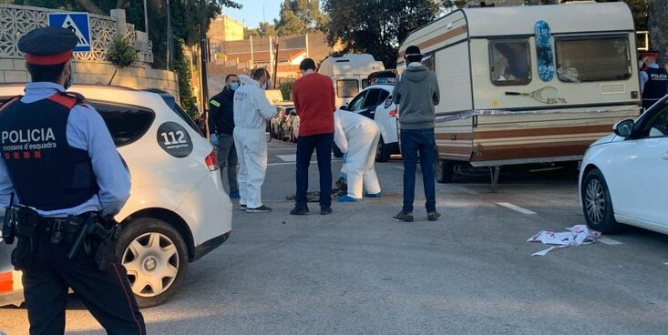
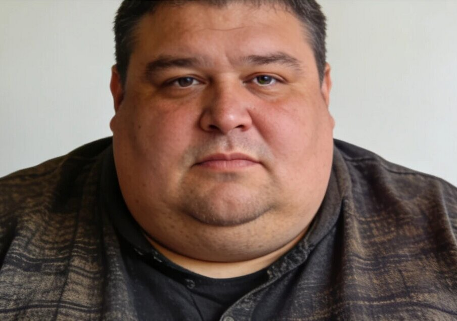

Alarma al barri de Gràcia: quatre desaparicions en menys de dos mesos
Els Mossos investiguen la connexió entre diversos veïns desapareguts, tots amb hàbits de consum similars

Vista del barri de Gràcia de Sabadell – Arxiu DS
Sabadell – La preocupació creix al barri de Gràcia després de la desaparició de quatre persones en menys de dos mesos. Els Mossos d'Esquadra mantenen oberta una investigació per determinar si els casos estan relacionats.
Les 4 persones desaparegudes són totes residents al barri excepte Marc Vidal que és de fora però treballava a Sabadell a la mateixa zona que els desapareguts. Tots comparteixen un perfil aparentment normal. Segons fonts policials, no hi ha indicis clars de violència en cap dels casos, però la coincidència temporal ha encès totes les alarmes.
El darrer desaparegut és un treballador de la carnisseria del Sorli Discau un supermercat de la zona, fet que podria aportar una nova línia d'investigació. Els agents no descarten cap hipòtesi, tot i que de moment no s'ha produït cap detenció.
Veïns del barri han expressat la seva inquietud i asseguren que "mai havia passat una cosa així". Alguns testimonis afirmen haver vist moviments sospitosos durant la nit en carrers poc transitats.
Segons les investigacions recents totes les víctimes compartien hàbits alimentaris similars, un detall que els investigadors no descarten que sigui rellevant per al cas.
Persones desaparegudes
